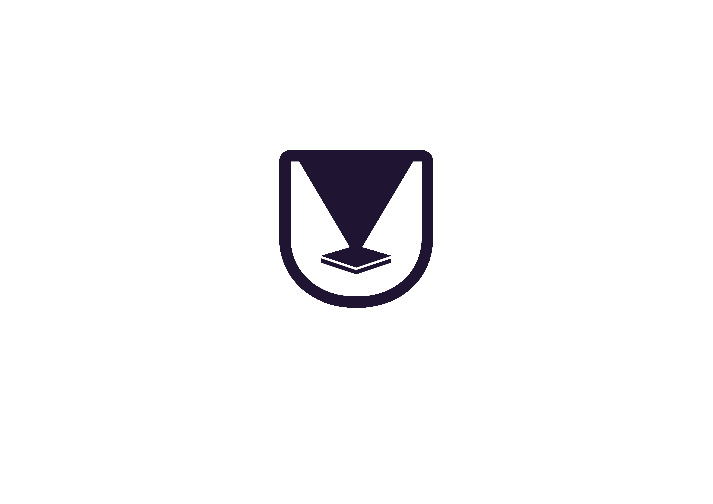
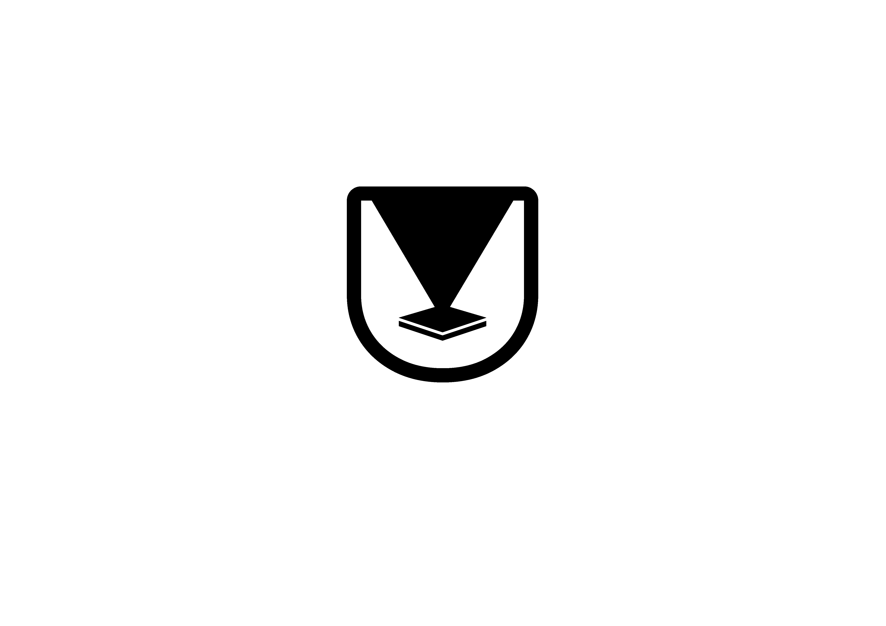

The wordmark is the mark. Comfortaa Bold, tracked slightly tight, green dot carrying the brand energy. One mark, used confidently — no icon lockup.
Each service gets the same wordmark with its accent colour on the dot. One system, five expressions.

colour
blackRetired from primary surfaces. Keep the icon for favicons, app icons, social avatars, merch stamps, letter seals — where type can't breathe. Do not combine with the wordmark.